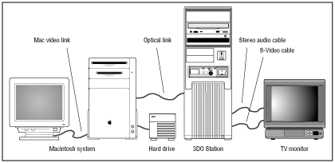

To create a CD-ROM image file, you need a 3DO development system. This section describes the hardware and software requirements for that system.
Note: A variety of configurations are suitable for the mastering process. While the figure below shows one possible configuration only, the text points to other suitable configurations.
3DO Development System Hardware Requirements
The figure below shows one possible system setup for creating the CD-ROM image file.

Figure 1: 3DO development system.
Here's a list of the required and recommended hardware:
Macintosh: 68040-based or Macintosh based on a 6XX PowerPC CPU. Choose the 7100 or 8100 because they can fit a full sized (or long) NUBUS card.
External hard drive with double-shielded SCSI-to-Macintosh cable (for moving CD-ROM image file-recommended but not required)
3DO Development System
either 3DO NuBus card installed in the Macintosh and connected to a 3DO Station
or 3DO Development Card or New 3DO Development card installed in Macintosh and 3DO External CD-ROM drive (for testing only)
TV monitor connected to 3DO Station or the 3DO development card inside the Macintosh
Note: See the Hardware Installation Guide for the 3DO development environment you are working on (3DO Station, or 3DO Development Card) for more information about the required hardware and installation.
3DO Development System Software Requirements
You need the following software to create the cdrom.image file:
Most recent 3DO Portfolio and 3DO Toolkit software